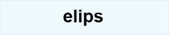
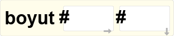
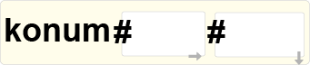
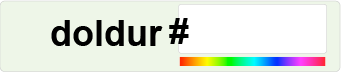
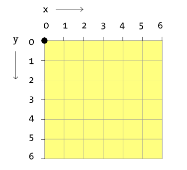
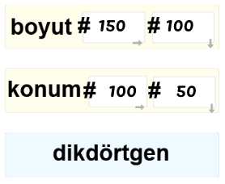
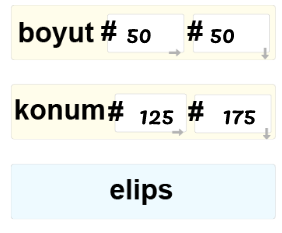
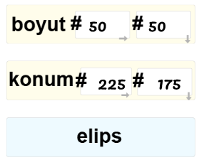
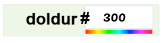
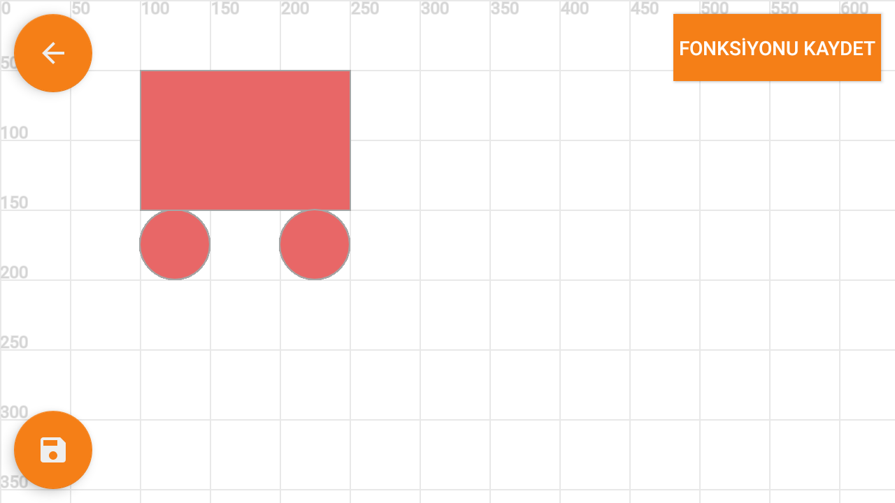

KartON, yazıcıdan çıktı alarak kullanabileceğimiz programlama kartları ve telefon yardımı ile temel şekilleri kullanarak çizim ve animasyon yapmamıza yardımcı olan bir programlama ortamıdır. Programlama dilini tasarlarken, bilgisayar kullanmadan birçok insanın bir arada üstüne çalışabileceği bir dil yaratmayı hedefledik.
Kod Saati - Flappy Bird Uygulaması
Kart-ON blokları ile bir kod saati uygulaması gerçekleştirmek istersen, uygulama içindeki Flappy Bird Aktivitesini tamamlayabilirsiniz. Kod saati için özel geliştirilen blokları ve dersi görmek için:
https://drive.google.com/open?id=1PkXaD4wj2l1NreFuEj54EruXDGkeJ9xr_1M4uzyD6h0
Karton bloklarının çıktılarını alıp, komutları kestikten sonra, ilk uygulamızı oluşturabiliriz. KartON uygulaması üzerinde oluşturabileceğimiz en basit uygulama herhangi bir basit şekil komutunu çalıştırmaktır.
Örneğin, ekranımızda bir elips görmek istiyoruz:

Ama bu elips komutunu kullanarak farklı boyutta ve farklı bir konumda bir elips çizebilir miyiz? Bunun için boyut ve konum komutlarını elips komutundan önce belirtmemiz gerekir.


Eğer bu komutları kullanmadan, sadece elips komutunu çalıştırırsak, merkezi yatay 100, düşey 100 ekseninde olan 50 birim çapında bir elips otomatik olarak çizilir.
Eğer elipsin farklı bir renkte olmasını istiyorsak, yine elipsten önce doldur komutunu kullanmamız gerekir.

doldur komutunun tek girdisi HSL renk tanımındaki H (hue), yani renk tonudur. 0 ile 360 arasında değer alır.
Kodlama, bilgisayar veya telefon gibi cihazların önceden tanımlanmış komutlar sayesinde, belirli bir görevi gerçekleştirmesidir.
Bu görev, bir mobil uygulama tasarlamak, bir animasyon yaratmak veya çizim yapmak olabilir.
KartON dilini geliştirmemizin üç amacı vardı:
KartON dili şu an için 32 adet komuta sahiptir. Bu komutlar sayesinde, çizim yapabilir, müzik oluşturabilir veya nesneleri hareket ettirebilirsiniz. Komutlar, programlamaya yeni başlayan öğrenciler için tasarlanmıştır.
Kodlama dilimizin amacı, çizim yapmak ve animasyon oluşturmak ise, temel çizim ve geometri kavramlarını hatırlamak yardımcı olacaktır
.
Koordinat Sistemi:
Çizim yapmak için bir sistem geliştiriyorsak, temel şekilleri nasıl tanımlayacağımızı belirlememiz gerekir. Koordinatlar ile çalışmak, bir düzlem üzerinde çizimi yapılacak şekillerin konumunu belirleyeceğimiz bir sistemdir.
Sağdan sola giden doğru X doğrusu olarak adlandırılır.
Yukarıdan aşağı giden doğru Y doğrusu olarak adlandırılır.
Kullanacağımız koordinat sistemindeki her bir nokta, bilgisayar ekranının piksellerine denk gelir. Yukarıdaki şekildeki siyah nokta, en üst-soldaki pikseldir.
Kart-ON programlama kartları ile bir araba çizmek istersek, üç temel şekil ile bu programı hazırlayabiliriz:
|
 |
 |
 |
Çizdiğimiz diködrtgenin konumlarını belirttiğimizde, girdi olarak belirttiğimiz sayılar, bu dikdörtgenin sol üst başlangıç noktası konumlarını belirtir. Elips komutunda ise bu konumlar elipsin orta noktasıdır.
Tüm şekillerin aynı renk olmasını istiyorsak, doldur komutunu tüm şekilleri çizmeden önce belirtmemiz yeterlidir.

Sonuç olarak, Kart-ON uygulamasında aşağıdaki gibi bir çıktı görürüz.
